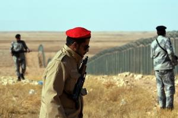
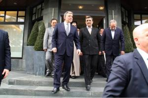
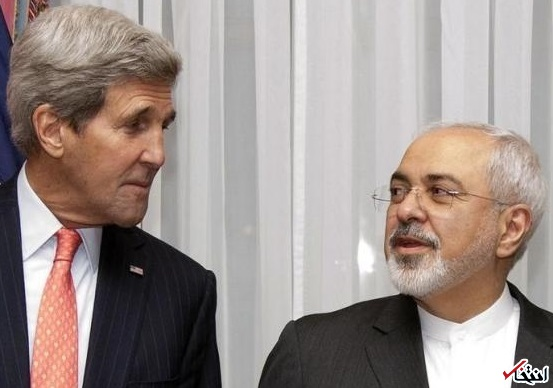

<عربستان از ترس داعش دیوار امنیتی ساخت>

یم سعودی از بیم نفوذ تروریستهای داعش طولانیترین دیوار امنیتی جهان را در مرز عراق احداث کرد.
به گزارش فرهنگ نیوز، پس از حمله دو ماه پیش داعش به نقاطی در مرز عربستان، ریاض با احداث دیوار مرزی شامل ۵ لایه حصار، برجهای دیدهبانی، دوربینهای دید در شب و دوربینهای راداری سعی کرده خود را از بحرانی که همسایگانش را در بر گرفته حفظ کند.
رسانههای سعودی اعلام کردند که عربستان کنترل مرزهای این کشور با عراق را برای جلوگیری از نفوذ گروههای تندرو تشدید کرد و با احداث طولانیترین دیوار امنیتی جهان به نام «دیوار بزرگ» مرز خود با عراق را استحکام بخشید.
دلیل سفر احمدینژاد به ترکیه از زبان افخم

مرضیه افخم دربارهی سفر محمود احمدینژاد به ترکیه و اقدامات وزارت خارجه در این باره گفت: سفر آقای احمدینژاد کاملا شخصی است و هماهنگی از سوی وزارت خارجه به عمل نیامده است.
به گزارش فرهنگ نیوز، سخنگوی وزارت خارجه دربارهی سفر محمود احمدینژاد به ترکیه گفت: سفر آقای احمدینژاد کاملا شخصی بوده است.
محمود احمدینژاد رئیسجمهور پیشین امروز (پنجشنبه) برای شرکت در مراسم گرامیداشت نجمالدین اربکان از شخصیتهای ترکیه به استانبول رفت. بر اساس گزارش رسانهها گفته میشود که این سفر به دعوت فرزند اربکان و رئیس بنیاد اربکان انجام میشود.
.
ظریف از ماجرای داد و فریاد خود بر سر جان کری می گوید: گاهی اوقات از کوره در رفتن اجتناب ناپذیر است / دوبار فریاد زدن ممکن است استرس انسان را کاهش داد

محمدجواد ظریف وزیر خارجه ایران در گفتگو با نیویورکر اظهار داشت: تدبیر حکم می کند که تمامی جناح ها به واقعیت ها در جهان توجه کنند که شما در آن قادر به انتخاب مخاطب خود نیستید. به گزارش سرویس بین الملل «انتخاب»، نیویورکر آورده است: هشت هفته ی آینده در عرصه دیپلماسی ممکن است دشوارترین دورانی باشد که ما در حوزه ی منع اشاعه تسلیحات هسته ای با آن مواجه بوده ایم.
شهادت فرمانده ایرانی مدافع حرم در سوریه +عکس

سردار حاج هادی کجباف طی عملیاتی که در منطقه "بصر الحریر" استان درعا صورت گرفت به مقام رفیع شهادت نایل آمد. شبکههای اجتماعی وابسته به گروههای تکفیری مدعی شدند که پیکر مطهر این شهید شوشتری در اختیار آنان است. به گزارش خبرگزاری اهل بیت (ع) ـ ابنا ـ منابع آگاه از شهادت یک فرمانده مستشار ایرانی که مسئولیت ساماندهی نیروهای مدافع حرم اهلبیت(ع) در سوریه را بر عهده داشت، خبر دادند. سردار حاج «هادی کجباف» ظهر روز یکشنبه 30 فروردین طی عملیاتی که در منطقه "بصر الحریر" استان درعا صورت گرفت به مقام رفیع شهادت نایل آمد.